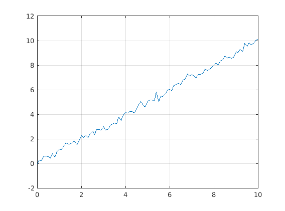
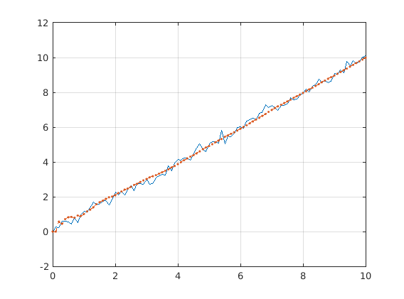
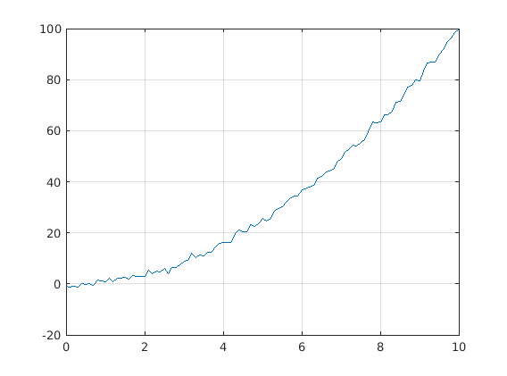
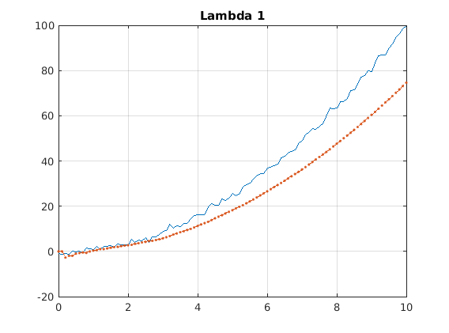
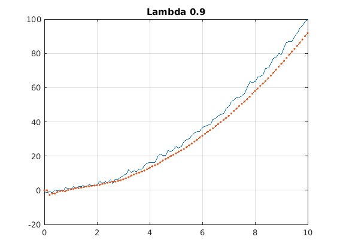
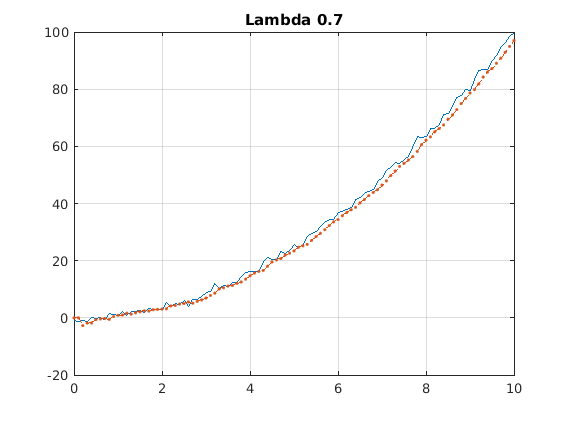

Contents
RLS - Hello World
Run this script with Publish utility
clear all clc % RLS regression curve - Straight line corrupted by noise test x = 0:0.1:10; y = x + 0.2*randn(size(x)); % Plotting the line figure(1) plot(x, y) grid
RLS initial parameters
init_cov_matrix = 1e5*ones(size(x, 1)); w0 = zeros(size(x,1)); lambda = 1;
RLS algorithm
[y_est, w, ~] = rls(x, y, init_cov_matrix, w0, lambda);
Plotting solutions
figure(2) plot(x, y) hold on plot(x, y_est, '--.') grid
Comparing the last RLS solution with OLS
% OLS w_ols = x*y'\x*x' % Last RLS coefficients w(end)
w_ols =
1.0010
ans =
0.9990
Trying square curve
y = x.^2 + 0.9*randn(size(x));
% Plotting the curve
figure(1)
plot(x, y)
grid
 RLS algorithm - Lambda = 1
lambda = 1; [y_est, w, ~] = rls(x, y, init_cov_matrix, w0, lambda);
Plotting solutions
figure(3) plot(x, y) hold on plot(x, y_est, '--.') title('Lambda 1') grid
RLS algorithm - Lambda = 0.9
lambda = 0.9; [y_est, w, ~] = rls(x, y, init_cov_matrix, w0, lambda);
Plotting solutions
figure(4) plot(x, y) hold on plot(x, y_est, '--.') title('Lambda 0.9') grid
RLS algorithm - Lambda = 0.9
lambda = 0.7; [y_est, w, ~] = rls(x, y, init_cov_matrix, w0, lambda);
Plotting solutions
figure(5) plot(x, y) hold on plot(x, y_est, '--.') title('Lambda 0.7') grid
close all